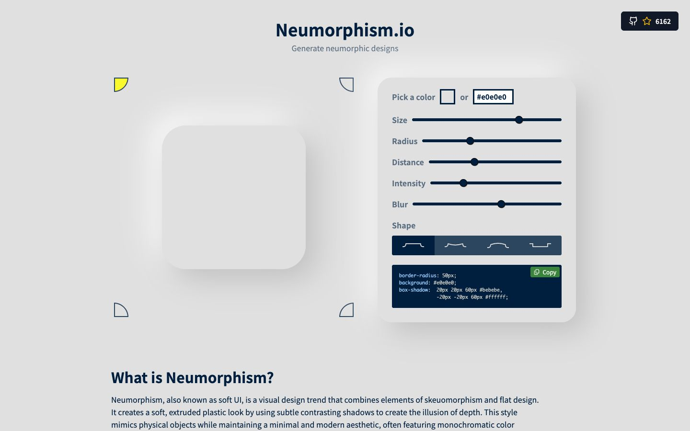

References / Website / 272
Neumorphism.io
The CSS shadow generator that spread the style’s recipe, itself built on one pale gray surface.
- Source
- neumorphism.io
- Creator
- Adam Giebl
- Style
- Neumorphism (agent-proposed, not yet reviewed by a person)
- Moods
- Soft, didactic
- Evidence
- Captured with
tools/capture.mjs(headless Chrome, 1440 × 900) on 28 September 2026 and inspected. The screenshot shows the first viewport; the measurement covers up to four screens. - Reviewed
- Rights
- Third-party work, stored with credit for commentary. License: unverified. Rights policy
Context
The source is on GitHub as adamgiebl/neumorphism, created on 29 December 2019, BSD-3-Clause, about 6,200 stars on 2026-09-28.
Observed
- A pale gray page (#e0e0e0). A large rounded square in the same gray sits at the left with a white glow at upper left and a gray shadow at lower right.
- A raised panel in the same gray holds sliders for Size, Radius, Distance, Intensity, and Blur, and four shape buttons (flat, concave, convex, pressed).
- A dark navy code box shows
box-shadow: 20px 20px 60px #bebebe, -20px -20px 60px #ffffff. - Headings and labels are a navy sans-serif. A small dark GitHub button at top right shows 6,162 stars.
Why it belongs
The generator states the style’s rule as code: two shadows with equal and opposite offsets and a blur three times the offset. CSS-Tricks names it as the generator of the trend.
Only the demo and the panel carry shadows; the text below is plain, so the page-level shadow share is low.
Measured: shadows on 11 % of boxes (median offset 28.3 px, median blur 60 px, none hard), borders on 25 %, median radius 6 px.
Borrow
Set the blur to two or three times the offset and derive both shadow colors from the surface color, as the generator does.
Measured
Machine-extracted by tools/extract-traits.js on . Full measurement.
- Type families
- Noto Sans JP (94%), Inconsolata (6%)
- Type scale ratio
- 1.21
- Median radius
- 6 px
- Mean chroma
- 0.04
- Palette
- #e0e0e0 82%
- #001f3f 17%
- #c5c8c6 1%
- #47a049 1%
- #96cbfe 0%
- #ffffff 0%
- #efefef 0%
- #3b843c 0%

